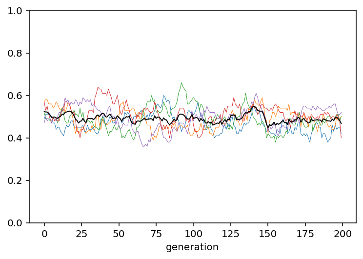
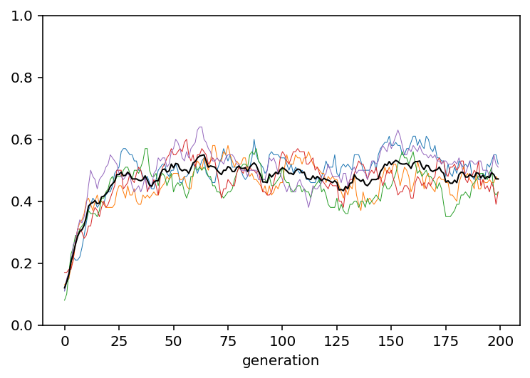

import numpy as np
rng = np.random.default_rng()
import pandas as pd5 Unbiased and biased mutation
Note
This chapter is based on “Chapter 2: Unbiased and biased mutation” in Acerbi et al. (2022).
def unbiased_mutation(N, mu, p_0, t_max, r_max):
# Create an output DataFrame
output = pd.DataFrame({
"generation" : np.tile(np.arange(t_max), r_max),
"p" : [ np.nan ] * t_max * r_max,
"run" : np.repeat(np.arange(r_max), t_max)
})
for r in range(r_max):
# Create first generation
population = pd.DataFrame({"trait": rng.choice(["A", "B"], size=N, replace=True, p=[p_0, 1 - p_0])})
# Add first generation's p for run r
output.loc[ r * t_max, "p"] = population[ population["trait"] == "A" ].shape[0] / N
# For each generation
for t in range(1,t_max):
# Copy individuals to previous_population DataFrame
previous_population = population.copy()
# Determine "mutant" individuals
mutate = rng.choice([True, False], size=N, p=[mu, 1-mu], replace=True)
# TODO: Something is off here! Changing the order of the conditions affects
# the result. Should be constant with random noise but converges to either A or B
# If there are "mutants" from A to B
conditionA = mutate & (previous_population["trait"] == "A")
if conditionA.sum() > 0:
population.loc[conditionA, "trait"] = "B"
# If there are "mutants" from B to A
conditionB = mutate & (previous_population["trait"] == "B")
if conditionB.sum() > 0:
population.loc[conditionB, "trait"] = "A"
# Get p and put it into output slot for this generation t and run r
output.loc[r * t_max + t, "p"] = population[ population["trait"] == "A" ].shape[0] / N
return output def plot_multiple_runs(data_model):
groups = data_model.groupby("run")
for _, g in groups:
g.index = g["generation"]
g["p"].plot(lw=.5, ylim=(0,1))
data_model.groupby("generation")["p"].mean().plot(c="k", lw="1")data_model = unbiased_mutation(N=100, mu=.05, p_0=0.5, t_max=200, r_max=5)
plot_multiple_runs(data_model)
data_model = unbiased_mutation(N=100, mu=.05, p_0=0.1, t_max=200, r_max=5)
plot_multiple_runs(data_model)
def biased_mutation(N, mu_b, p_0, t_max, r_max):
# Create the output DataFrame
output = pd.DataFrame({
"generation" : np.tile(np.arange(t_max), r_max),
"p" : [ np.nan ] * t_max * r_max,
"run" : np.repeat(np.arange(r_max), t_max)
})
for r in range(r_max):
# Create first generation
population = pd.DataFrame({"trait": rng.choice(["A", "B"], size=N, replace=True, p=[p_0, 1 - p_0])})
# Add first generation's p for run r
output.loc[ r * t_max, "p"] = population[ population["trait"] == "A" ].shape[0] / N
# For each generation
for t in range(1,t_max):
# Copy individuals to previous_population DataFrame
previous_population = population.copy()
# Determine "mutant" individuals
mutate = rng.choice([True, False], size=N, p=[mu_b, 1-mu_b], replace=True)
# TODO: Something is off here! Changing the order of the conditions affects
# the result. Should be constant with random noise but converges to either A or B
# If there are "mutants" from B to A
conditionB = mutate & (previous_population["trait"] == "B")
if conditionB.sum() > 0:
population.loc[conditionB, "trait"] = "A"
# Get p and put it into output slot for this generation t and run r
output.loc[r * t_max + t, "p"] = population[ population["trait"] == "A" ].shape[0] / N
return output data_model = biased_mutation(N = 100, mu_b = 0.05, p_0 = 0, t_max = 200, r_max = 5)
plot_multiple_runs(data_model)
data_model = biased_mutation(N = 10000, mu_b = 0.05, p_0 = 0, t_max = 200, r_max = 5)
plot_multiple_runs(data_model)
data_model <- biased_mutation(N = 10000, mu_b = 0.1, p_0 = 0, t_max = 200, r_max = 5)
plot_multiple_runs(data_model)